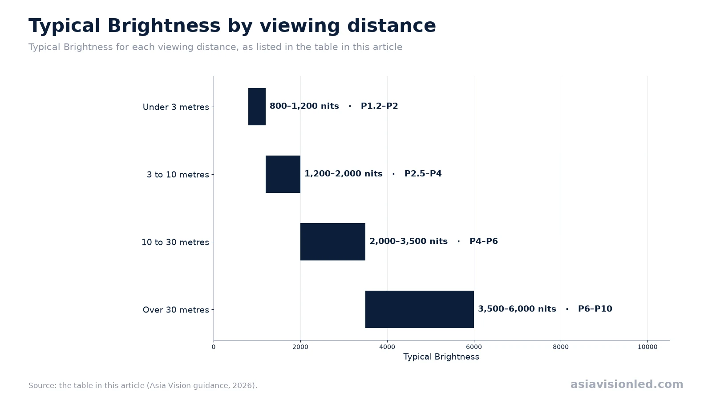

Which LED Displays Are Best for Airport Concourses and Entry Gates?
By David
For concourses and entry gates, the best display type is usually a fixed indoor LED video wall: a mid-to-fine pixel pitch matched to how far passengers actually stand or walk, brightness with headroom for daylight through terminal glass, a wide viewing angle, and redundant power and signal. Close-range gate signs and concourse wayfinding need a finer pitch and moderate indoor brightness. Long views down a concourse and large flight-information boards can use a coarser pitch at higher brightness. LCD banks can still work for small, enclosed boards, but they lose where the image must be seamless, large, or readable against strong ambient light. A weather-sealed outdoor cabinet is the right type for curb-side canopies and facades, not for a typical indoor concourse or gate.
The rest of this guide specifies those choices by scene — FIDS, concourse and gates, check-in, and baggage claim — then covers the brightness, uptime, certification and service points that every airport zone still has to meet. For a broader terminal overview see the airport LED display guide; tender wording is covered in the airport tender guide.
Best Display Types for Concourses and Entry Gates
An airport terminal never closes. A failed board is an operational incident, not a marketing inconvenience, which is why the display type has to be chosen for uptime and readability, not only for the finest pitch. LED wins over LCD wherever the surface must be large and seamless, or where glass facades push light levels above what an LCD panel can hold for the life of the installation.
| Location | Best display type | Why |
|---|---|---|
| Concourse and entry gates | Fixed indoor LED wall, mid-to-fine pitch, front service, redundant power and signal | Wide viewing angles, daylight readability, module swaps without closing a passenger route |
| FIDS in halls and above ticketing | Large indoor LED board, pitch set by viewing distance, high brightness headroom | One continuous departure or arrival surface; no bezel grid breaking the typography |
| Check-in hall | Indoor LED for large boards; LCD only for small enclosed counters | Halls are bright and viewed from a distance; close counter screens can be simpler |
| Baggage claim | Durable indoor LED with easy front access; advertising and belt information may share the wall | Luggage traffic, long hours, and limited closure windows |
| Curb-side, canopy or exterior facade | Outdoor high-brightness cabinet with weather sealing, such as D-PRO or outdoor COB such as COB EF | Sun, rain and temperature, not indoor concourse conditions |
Flight Information Displays (FIDS)
A flight information display is read at a glance from a distance, often in a bright check-in hall or above a circulation space. The passenger needs to find a flight number, time and gate on a single, continuous surface. That is why a seamless LED board is usually the better type than a grid of LCD monitors: bezels break rows of text and slow a traveller who is already under time pressure.
Specify the pitch from the actual viewing distance, not from a catalogue minimum. A hall board read from 15 to 30 metres does not benefit from a pitch chosen for a two-metre retail wall. Brightness needs headroom above the measured ambient light, because LED output declines over years of continuous use. The board must also update quickly when the flight-data system changes a gate or a delay, and it should keep showing that data if one power supply or one signal path fails.
For finer-pitch indoor FIDS and close wayfinding, an indoor small-pitch series such as M-PRO is a practical starting point. For very large, longer-range boards, a coarser indoor or high-brightness cabinet is usually the better use of budget.
Figure 1 shows an outdoor LED screen from the image library, used here only as a visual reference, not as an airport installation photograph.
Concourses and Entry Gates
Concourses and entry gates combine two reading distances on the same journey. A passenger walking the concourse needs wayfinding and flight status that remain legible at ten metres and at an angle. At the gate itself, boarding status, seat and bag information, and airline identity are read from a few metres by a queue of people standing in one place.
The display type that fits both jobs is still a fixed indoor LED wall, but the pitch and brightness should be zoned. Gate-adjacent screens, which people approach, belong at a finer pitch — often in a P1.2 to P2.5 range — with moderate indoor brightness and a wide viewing angle so the queue can read the board from the side. Overhead concourse signs and long lateral walls can use a coarser pitch and higher brightness, especially where daylight washes the floor through a glass facade.
Redundancy and service access matter more here than in a back-of-house office. A dark gate board during a bank of departures is a passenger-flow problem. Front-serviceable cabinets let a technician swap a module from the face of the wall without scaffolding a live corridor. Dual power supplies and dual signal paths should be written into the specification for every gate-critical screen, not treated as an optional upgrade.
Check-in Halls
Check-in halls are typically the brightest indoor rooms in a terminal and the ones with the longest viewing distances. Large LED boards for flight information, queue status and common-use branding should be specified with a higher brightness range and a pitch suited to 10 to 30 metre views. Wide horizontal viewing angles matter because passengers approach from several aisles, not from a single centreline.
Smaller screens at an individual counter can still be LCD if they are enclosed, close, and not fighting a glass wall. Do not let a single hall-wide specification force fine-pitch, high-brightness LED onto every counter monitor, or starve the main FIDS board of the brightness it actually needs. Write each check-in zone as its own line in the tender.
Baggage Claim
Baggage-claim screens do two jobs: belt and flight identification, and often advertising or destination content on a larger wall. The room is busy, bags and trolleys pass close to some surfaces, and closures for maintenance are unpopular. A durable indoor LED wall with front access is usually the right type. If passengers can touch or strike the lower part of the wall, a protected module surface is worth specifying.
Brightness can be lower than in a sunlit check-in hall, but the content must still be readable at a glance while people look for a belt number. Plan device access and spare modules so a failed panel can be replaced between arrival banks rather than during them.
Brightness and Viewing Distance
Terminal lighting is often brighter than a typical office, and glass facades can push ambient light far higher. Choose brightness with headroom above the measured ambient level. A screen specified at exactly today's ambient level will look dim before the end of its service life.
| Viewing Distance | Suggested Pitch | Typical Brightness | Best Use |
|---|---|---|---|
| Under 3 metres | P1.2 to P2 | 800 to 1,200 nits | Retail and close wayfinding |
| 3 to 10 metres | P2.5 to P4 | 1,200 to 2,000 nits | Gate and corridor signs |
| 10 to 30 metres | P4 to P6 | 2,000 to 3,500 nits | Check-in and hall FIDS boards |
| Over 30 metres | P6 to P10 | 3,500 to 6,000 nits | Exterior facade and large outdoor walls |
Figure 2 plots the typical brightness values from the table above for each viewing distance. These ranges are starting points, not rules. A screen behind a glass curtain wall may need a much higher indoor brightness, because the sun can fall on the display for part of the day. Always measure the worst-case light condition in the actual terminal before fixing the figure.

✅ Display type chosen by zone, not one product for the whole terminal
✅ Brightness with headroom above measured ambient light
✅ Pitch matched to the real viewing distance
✅ Redundant power and signal paths on operational screens
✅ Front or rear access for module service without a corridor closure
✅ Certification file for fire, safety and EMC, collected before award
Redundancy and Uptime
Airport buyers should require redundancy in both power and signal. Dual power supplies with automatic changeover keep a screen alive when one unit fails, and dual signal paths keep content flowing when a cable or a sending card fails. The added cost is small next to the operational cost of a dark departure board during peak traffic.
Define the uptime target in the contract and attach a measurement method. A target of 99.9 percent sounds impressive until the buyer converts it into minutes of darkness across a year of continuous operation. For flight information screens, acceptable downtime should be measured in minutes per year, with a service response tied to that figure.
Figure 3 shows an outdoor LED screen from the image library.

Certification and Safety
Airport installations fall under strict fire, electrical and electromagnetic rules. Require fire-rated cabinet materials, low-smoke emission where the local code demands it, and EMC test reports that show the screen will not interfere with navigation or radio systems. These documents are conditions of installation, not optional extras.
Ask for the certification file early in the tender, not after the order. Some buyers discover too late that a chosen cabinet material lacks the required fire rating for a ceiling void, which forces a redesign at the worst moment. Verify the documents before the award, and keep copies in the project file for the authority's inspection. Requirements vary by country; do not assume a single certificate covers every airport.
Content Systems and Installation Access
Airport signage is the visible end of an information system that connects to flight data, gate changes and public announcements. The LED network must integrate through a documented interface, and the supplier should demonstrate that integration rather than promise it in a brochure. Test update latency during commissioning and record it, so a later performance complaint can be measured against an agreed baseline.
Service access is the constraint most often underestimated. A screen in a ceiling void or behind a wall may be impossible to reach without scaffolding and a corridor closure, and those closures need approval weeks in advance. Front-serviceable cabinets remove most of this problem. Walk the access path with the installer and the maintenance team before approving the design.
✅ Uptime target with a stated measurement method
✅ Response time for critical and non-critical faults
✅ Spare modules and power supplies held locally
✅ Remote monitoring and alerting included
✅ Penalty or credit if the uptime target is missed
Tender Advice and Lifetime Cost
Airport tenders reward buyers who specify outcomes rather than a single catalogue model. Describe the required display type by zone, the brightness under measured site conditions, the uptime target, the service response, and the certification file, then let suppliers propose the hardware. Score bids on verified evidence — test reports, reference airports, and a demonstration of the flight-data interface — not on marketing claims. The same discipline is set out in the quote comparison checklist and the specifications guide.
Price the screen over its whole life, not only at purchase. Add power at the real operating brightness, spare-parts stock, the service contract, and the cost of any corridor closures needed for maintenance. For a terminal that runs twenty-four hours a day, energy is a significant share of lifetime cost. Ask for average power at the operating brightness, then multiply by real operating hours.
When you are ready to turn a zone plan into a specification, contact Asia Vision with the terminal areas, viewing distances and operating hours. We can propose indoor series such as M-PRO for close-range boards, and outdoor series such as D-PRO or COB EF for facades and curb-side signs.
FAQ
Sources and Further Reading
Related Articles
For close-range indoor terminal boards, see the M-PRO indoor small-pitch series. For exterior and curb-side signs, see the D-PRO outdoor SMD series and the COB EF outdoor COB series.
Spec an Airport LED Display
Tell us your terminal zones, viewing distances and operating hours, and we will propose display type, brightness, redundancy and service terms.
Request Airport SpecChat on WhatsApp